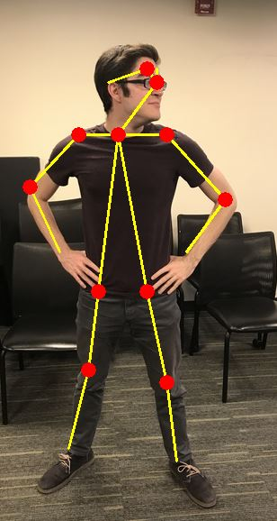
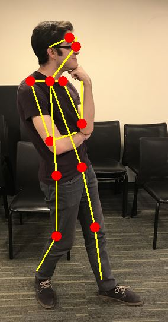
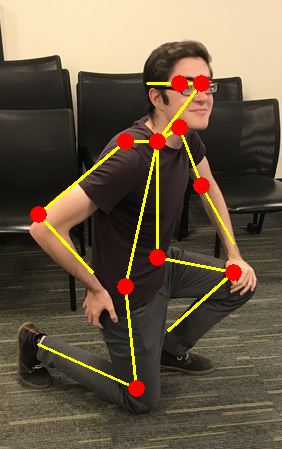
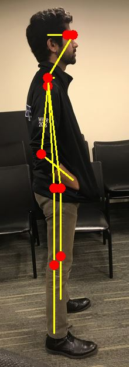
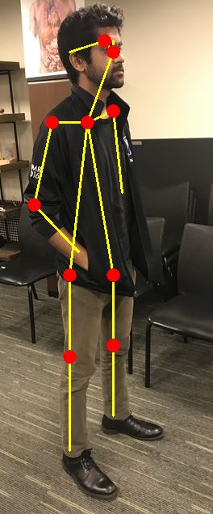
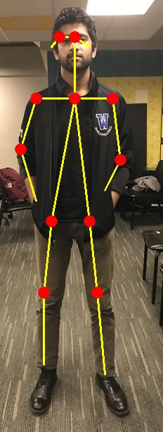
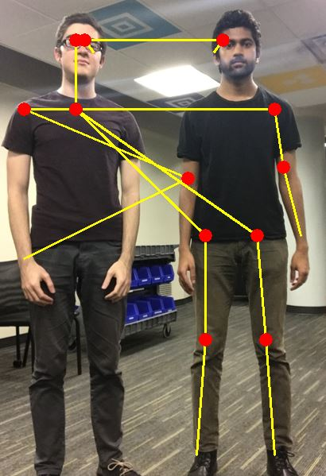
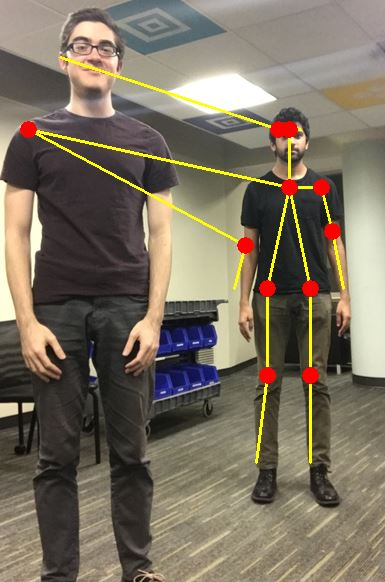
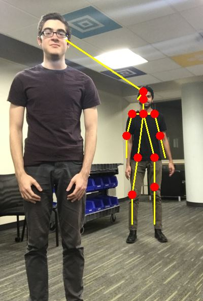

| Input | Template | Overlay |

|

|

|
| proposal | planning | progress | final update | code | docs |
Determining the similarity between abstract scenes is a difficult problem in cognitive computing. Humans can look at two images or videos and immediately tell if they are similar, but this intuition is difficult to encode.
We present an application of 2D human pose estimation for accessing similarity between motions in the space of weightlifting. Given input video of a person performing an exercise, our system will access their form. That is, it will give a similarity score between the user's motion and that motion performed "ideally".
| Input | Template | Overlay |
|
|
|
|
Current pose estimation techniques are able to map a wire frame onto video of a moving person. We present an application of 2D pose estimation for assessment of proper workout form. Given input video of a person performing an exercise, our system will compare the subject's wire frame with that of a template representing "ideal" form. The system will then superimpose the template with the input and return the resulting overlay with a performance metric representing the similarity between the two.

Skeleton Representation - The problem with representing skeletons as the coordinates as their keypoints is that they are now sensitive to the scale and orientation of the subject. Our system represents skeletons as sets of relationships between points (i.e. distance, relative angle, ...). Looking at these relationships rather than the absolute points makes our system robust to changes in the composition of the shot.
When evaluating the performance of our system with regard to fitting skeletons, we had to do so qualitatively. A quantitative measure of this performance would require some notion of a "perfectly fit skeleton." If we could compute such a thing, we would be using it to solve our problem.
We were able to use the OpenCV Software along with a COCO object detection neural network to detect the skeleton of a user in a single photo.
We extended this process to detect the skeletons of a user performing a squatting exercise. This video is adversarial because of the color composition of the video - the background is very low contrast with the person's clothing.
Dispite the nature of the input, the system tracked the person very well. The front leg is stable enough to use in similarity calculations.
We decided to test the neural net on multiple of our own images to see if we could achieve good results. We set up the images with a consistent subject against a non-trivial background. In real-world scenarios, occlusion is a problem. In squatting specifically, the plates and squat rack will be blocking the view of the camera.
|  |  |  |
We found it performed well even with differing amounts of partial occulusion and poses.
Our system makes the assumption of a consistent viewing angle of the user's motion. One major decision we had to make was choosing that viewing angle.
|  |  |  |
Initially we thought that a profile view would be best because it removes depth - a major obstacle in pose estimation. After running these tests, we found that performance was similar across differing viewing angles.
One problem we foresaw with using the system in a real-world environment is that in the real world, there are often other people. We wanted to see to what extent does another person in the shot affect the quality of the output.
|  |  |  |
If you have an obstacle close to the camera, keypoints will be split between the two, making for unusable data. If you have an obstacle in the background of the frame, the system might interpret it as the subject.
For the video shown here, we compared the similarity of each wire skeleton to the benchmark zones of the "squat" motion and plotted it.
We instantly saw the problem of having a symmetric motion with almost symmetric benchmark zones, we would need to separate the motion into multiple sections. We decided to solve this by adding gaussians to each curve where the mean would be approximately where in the video the user should be performing that action. The plot below clearly shows the peaks of where the benchmark zones of this specific user's motion is.
Notice that even thought the video is symmetrical, Each benchmark zone has a distinct peak and are noticiably different allowing us to identify each one.
| Video | Score | Discussion |
|---|---|---|
| 97.9% | This was the main template we used, so it should theoretically have 100% accuracy. In reality, it has a little less because our addition of the gaussian noise makes the algorithm miss the middle benchmark zone slightly. | |
| 99.1% | This is an example of a user performing a "good" squat that the algorithm also agreed was good. The keypoint detector is shown to be robust to occlusion and noise. | |
| 87.8% | This video is an example of a user that scores well with our algorithm, but is doing the squatting motion incorrectly. They are sitting too far down, and butt juts out when ascending. However, since all of these mistakes are made inbetween benchmark zones, the system still decides to score it well. This shows the limitations of using benchmark zones to score the motion. | |
| 80.1% | This video is an example of a user performing a "bad" squat and the system giving the user a bad score. | |
| 45.0 | This is a degenerate case where the user is performing an entirely different motion. Since the system gave it a low score, we can consider this a success. The algorithm was able to distinguish between completely different motions. |
We had two main questions after coming up with this project: How well can we distinguish between two separate motions? How well can we algorithmically grade someone's workout form? We were able to create a reasonable judge of workout form under "ideal" conditions. However, this required a few strong assumptions.
Possible Extensions:
Realtime Multi-Person 2D Pose Estimation using Part Affinity Fields - Cao et al. 2017
Hand Keypoint Detection in Single Images using Multiview Bootstrapping - Simon et al. 2017
Convolutional Pose Machines - Wei et al. 2016
COCO Object Detector - Common Objects in Context